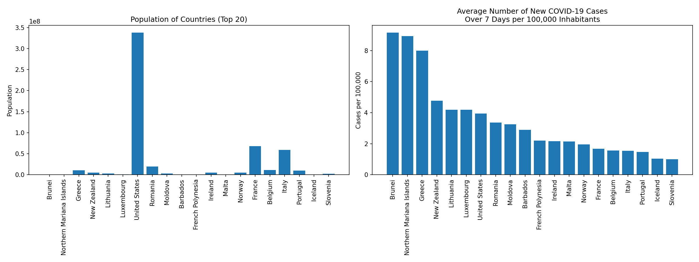
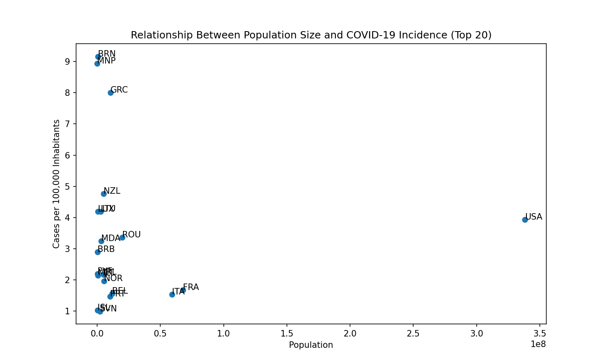
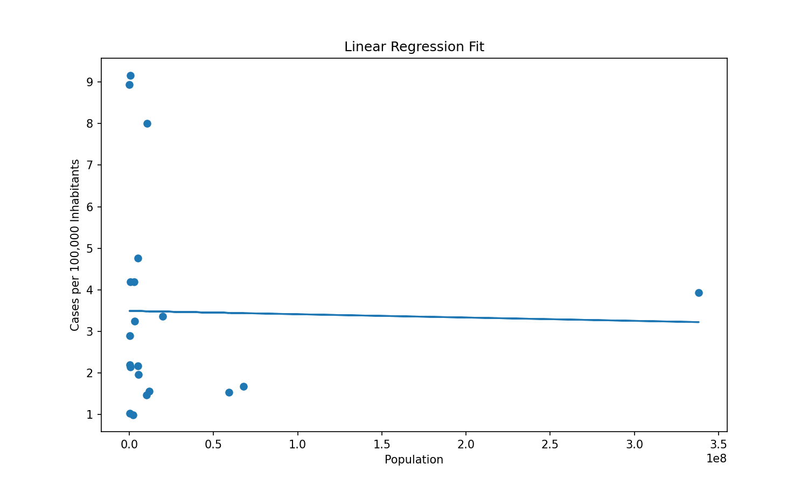
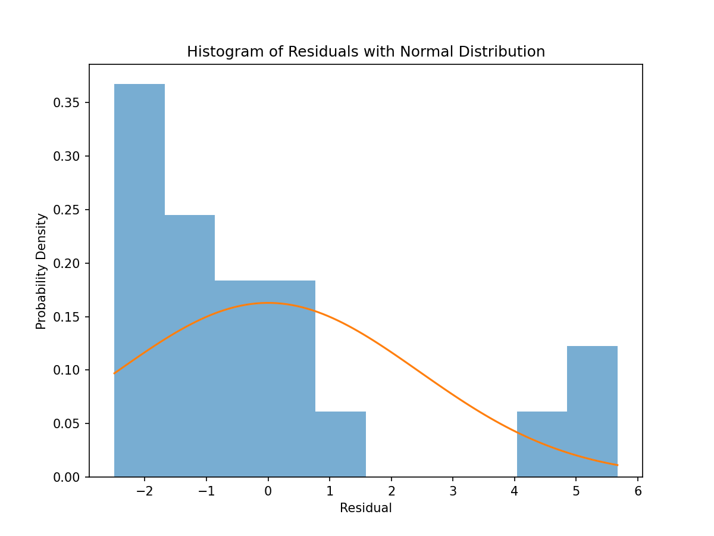

The left chart shows the total population of the selected countries, while the right chart shows the average number of new COVID-19 cases over the last seven days normalized per 100,000 inhabitants. These charts demonstrate that a high incidence rate is not directly related to the absolute size of the population.
 Comparing these two charts confirms that a large population does not automatically imply a higher infection rate. Therefore, it is crucial to monitor indicators normalized to population size.The scatter plot illustrates the relationship between a country's population size and its average number of new COVID-19 cases per 100,000 inhabitants. The visualization suggests that there is no strong linear dependence between these two variables.
A linear regression line was added to the scatter plot to provide a simple approximation of the relationship between population size and COVID-19 incidence. The fitted line indicates only a weak linear trend.
The residual histogram shows the distribution of differences between the observed values and the values predicted by the linear regression model. A fitted normal distribution is overlaid to assess whether the residuals follow an approximately normal distribution, which is an important assumption of linear regression.
